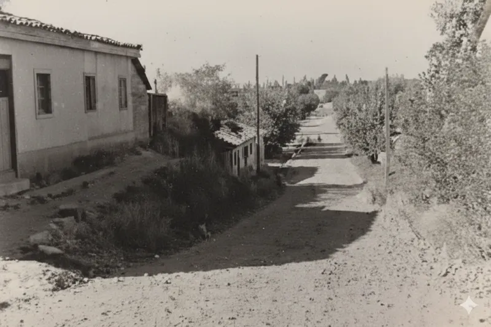
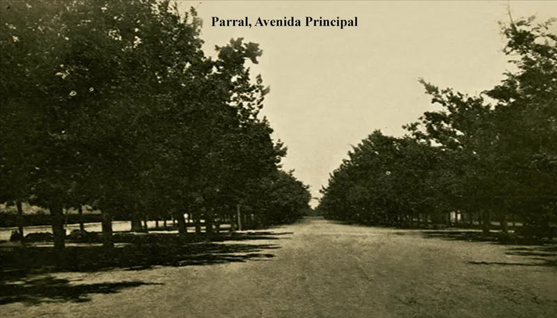
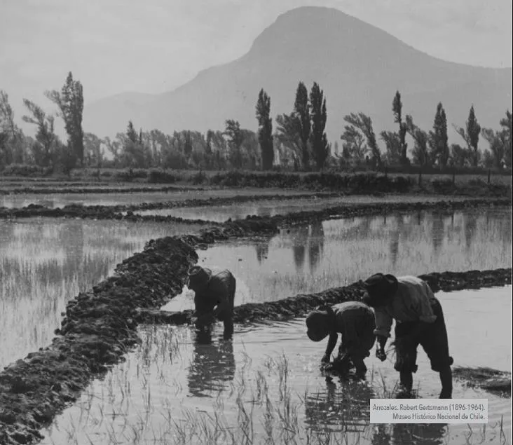

🔍
Archivo Original

Bajada Buenos Aires
Vistas históricas de la avenida

Locales Comerciales de Siempre
Comercio Histórico
Restauración IA

Plaza de Armas
El Corazón Cívico
Archivo Original

Bomberos de Parral
Héroes del Fuego


Avenida Principal
La columna vertebral

Hombres en el Arroz
Identidad Agrícola


Restauración IA

Tren de Pasajeros
El ferrocarril conectando pueblos
Restauración IA

Casas Antiguas
Arquitectura de otro tiempo
Restauración IA

Estación Pre-1939
Antes del gran terremoto
Restauración IA

Fiesta de Primavera 1925
Celebración centenaria
Restauración IA

Locales Antiguos
El comercio de antaño
Restauración IA

Ramal Parral-Cauquenes
Locomotora histórica
Restauración IA

Templo San Francisco
Antes del terremoto del 39
Restauración IA

Templo San José
Antes del terremoto del 39
Restauración IA

Ruta Parral-Cauquenes
El camino entre dos pueblos
🇮🇹 Colonia Italiana

Italianos en Parral
La Colonia Italiana de San Manuel
🌊 Desastre Natural

Inundación de 1965
La gran crecida del río Perquilauquén
🇩🇪 Historia Oscura

Colonia Dignidad
Un capítulo oscuro de nuestra historia
♨️ Turismo Histórico

Termas de Catillo
Las históricas aguas termales de la zona


{kind=link}
{kind=link}
{kind=link}
{kind=link}
{kind=link}
{kind=link}
{kind=link}
{kind=link}
{kind=link}
{kind=link}
{kind=link}
{kind=link}